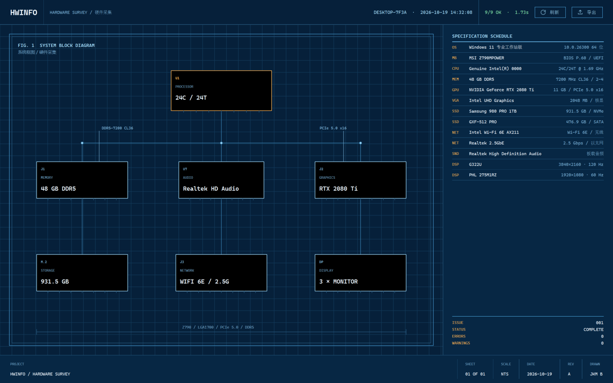
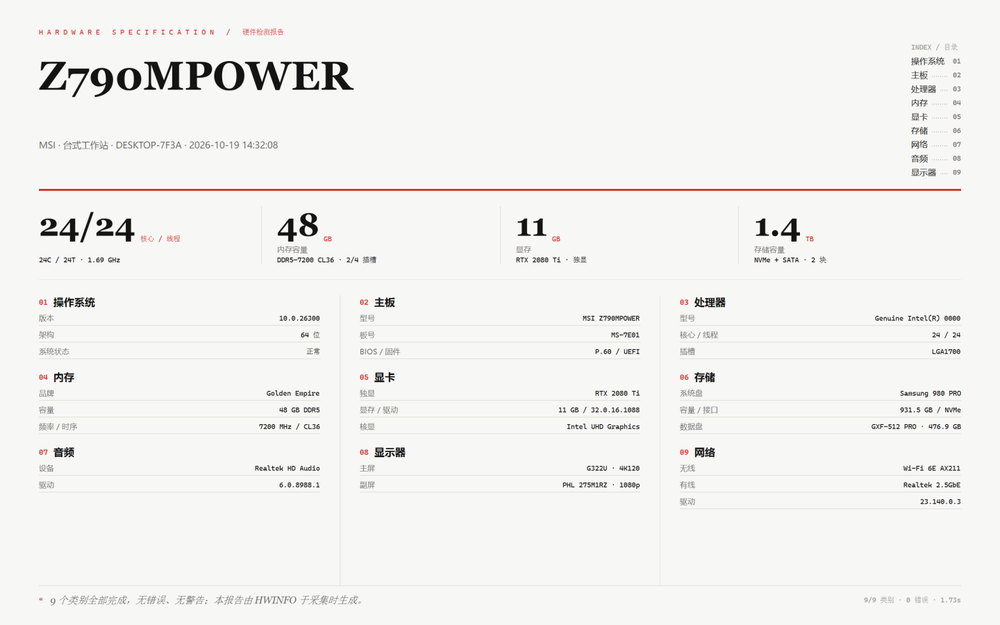
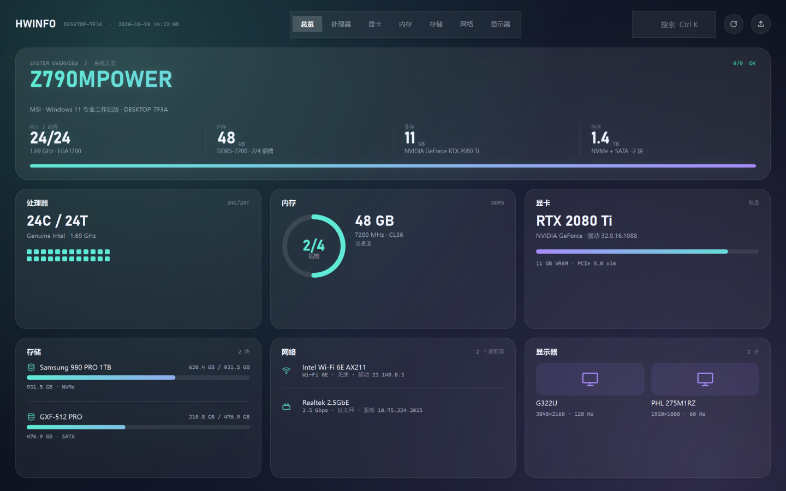
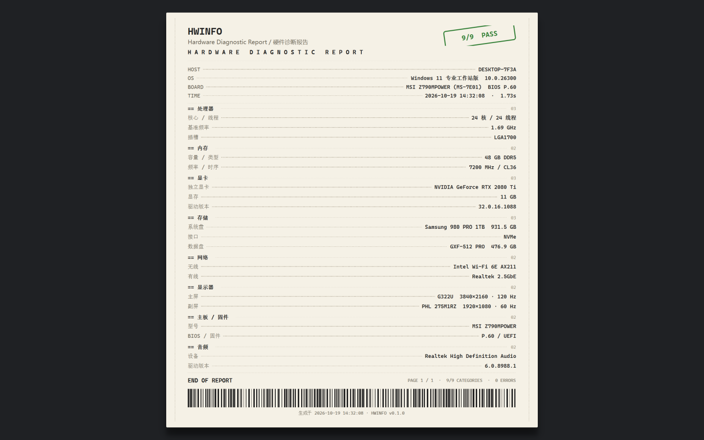

HWInfo · GUI Redesign · 5 Style Directions
五套界面风格原型
同一份 mock 数据（取自真机采集结果）、同样的 1440×900 尺寸，只换视觉语言。
五套都只用 Windows 自带字体（Bahnschrift / Georgia / Cascadia Mono / 微软雅黑），不打包字体，符合「单文件 EXE 体积优先」。
实时监控已按你的要求后置，本回合只做风格。

01 · BLUEPRINT
蓝图工程图
深普鲁士蓝 + 白色技术线稿 + 自绘系统框图 + 引出标注 + 尺寸线 + 右下角图签。把硬件检测变成一张工程图纸，辨识度最高。

02 · EDITORIAL
规格手册 / 杂志排版
冷白纸面 + Georgia 衬线大字号 + 朱红点缀 + 细发丝线与三栏规格。最有「高级感」，适合截图存档与对外分享。

03 · BENTO
便当格总览
浅灰底 + 白色大圆角卡片 + 柔和阴影 + 每类一色。友好、现代、门槛最低，普通用户和装机场景最容易接受。

04 · GLASS
深色玻璃 / 现代高级感
深夜渐变 + 柔光 + 半透明磨砂面板 + 青紫渐变点缀。最有「数码产品」质感，偏年轻、偏好看。

05 · PRINTOUT
点阵打印报告
深灰桌面 + 米白纸张 + 等宽字体 + 点线引导 + 印章 + 条形码。像一张刚打印出来的诊断单，复古且有记忆点。
五套风格对比
| 维度 | 01 蓝图 | 02 杂志 | 03 便当 | 04 玻璃 | 05 打印 |
|---|
| 气质 | 工程、硬核、技术 | 高级、编辑、克制 | 友好、现代、生活化 | 数码、精致、沉浸 | 复古、机械、有梗 |
| 信息密度 | 高 | 中高 | 中 | 中 | 高（单列） |
| 主色调 | 深蓝 + 青色线 | 白 + 黑 + 朱红 | 浅灰 + 多彩 | 夜黑 + 青紫渐变 | 米白 + 墨黑 + 印章红绿 |
| 最适合 | IT 支持 / 硬件爱好者 | 对外报告 / 截图分享 | 普通用户 / 装机单 | 年轻用户 / 展示向 | 存档 / 打印 / 趣味 |
| 实现成本 | 中高（自绘框图） | 低（纯排版） | 中（卡片 + 少量自绘） | 中高（渐变 + 自绘圆环） | 中（点线 + 印章 + 条形码自绘） |
| 深色 / 浅色 | 深色 | 浅色 | 浅色 | 深色 | 浅色（纸面） |
| 风险 | 偏冷、普通用户可能觉得太工程 | 留白多、一屏信息略少 | 个性偏弱、容易撞脸同类应用 | 深色长文本阅读一般、渐变需克制 | 信息长、不适合频繁交互 |
怎么选：如果目标是「一眼好看、人人能懂」，选 03 便当 或 04 玻璃；
如果想要「有身份、像专业工具」，选 01 蓝图；如果主要用途是「截图给客户/同事看」，选 02 杂志；
如果想要「有意思、能记住」，选 05 打印。
也可以混合：例如用 03 便当 做主界面，把 05 打印 做成「导出报告」的样式。